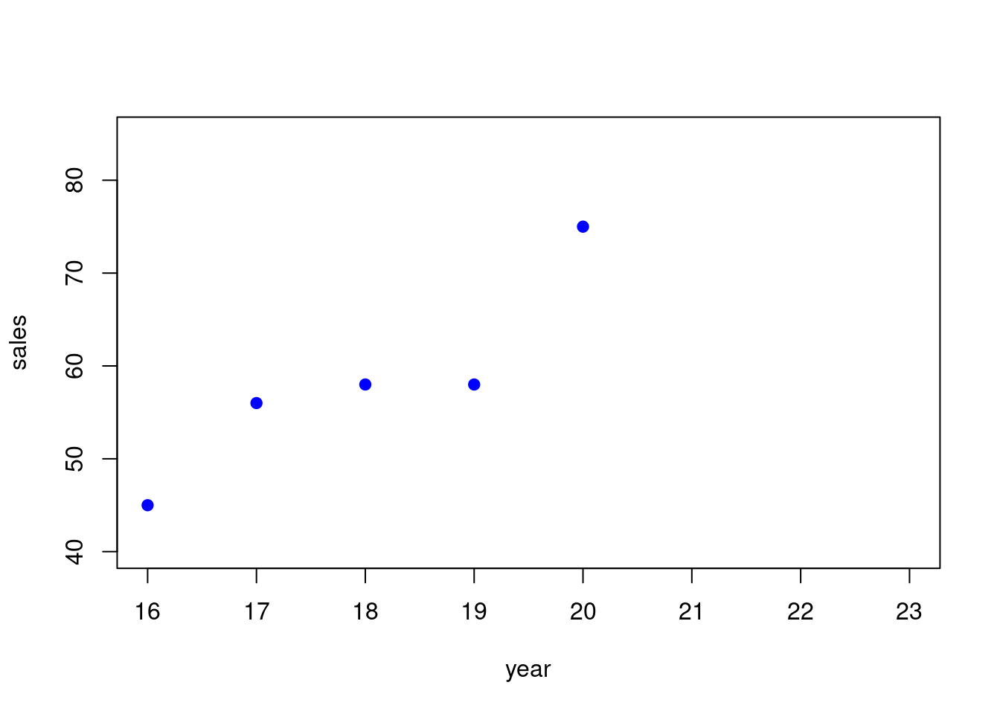
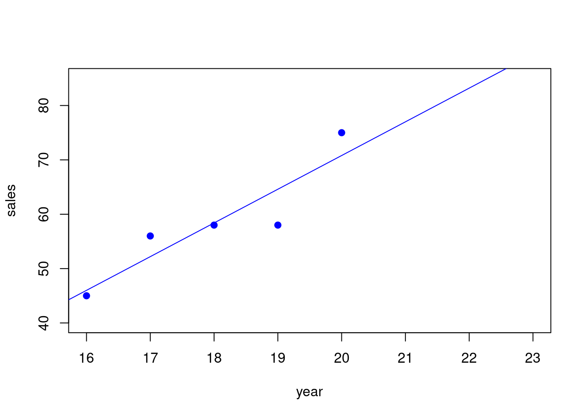

| year | sales |
| 16 | 45 |
| 17 | 56 |
| 18 | 58 |
| 19 | 58 |
| 20 | 75 |
24 Simple Regression
24.1 Is There a Trend?
To understand regression we have to look at the data and think about if there is some kind of trend to it.
For example is the data increasing (“trending uphill”) or decreasing (“trending downhill”). If it is then we may be able to use this trend to try to predict what the data is doing. Here is an example of some sales data for some product over several years:
Here we have several years of sales for some product. In this case, the units of y are given in thousands of dollars. So that for this product:
- 45 means $45,000 of sales that year
- 56 means $56,000 of sales that year
Can we use this data to predict what the sales will be for the product for the next few years? Say we want to try to predict it for year 21 and year 22 which are in the future.
Its might be hard to tell just from looking that the data values. Lets look at a graph:
24.2 Scatterplot - Graphing the Data
One of the first things we can look at is a graph that shows the data, to see if there is some “trend”. So here is the graph of the data:

This is called a scatterplot. A scatterplot is where you display the x and y for each of the data points we have. This is just the familar plot of (x,y) points in the plane that you knew from high school.
- the first point we plotted was (16, 45)
- the second point we plotted was (17, 56)
- and so on…
Each x-value has an y-value that goes with it.
So maybe we can use the x-value to predict the y-value. If the data is not too scattered then this makes sense. In this case the scatter is not to broad.
In order to do this, we have to come up with a way of “modeling” the data. In our case we will “model” this relationship between x and y by using a straight line.
Lets see how we can do this.
24.3 Modeling the Data with a Straight Line
First we need a “model” for what is happening.
Suppose we try to “model” the relationship between x and y with a straight line. It looks like it is trending up more or less in a line, though maybe not a perfect line.
Here is an example of one straight line that might do the trick.

We will see a little later where this straight line comes from (its called the regression line), but for right now just notice that this straight line fits the data pretty well but the data is not a perfect fit, and has some “scatter”.
How can we use this straight line to predict the “sales” using the “year”?
24.4 Doing Predictions of y from x Using the Graph
Basically we can predict the “sales” by going to the year we are interested in and going up to the line and taking that value as our prediction of the sales.
More or less we are just “extending the trend” we see from the line.
In detail:
- If the year is 21 go up to where the line is above 21 for the prediction
- If the year is 22 go up to where the line is above 22 for the prediction
24.5 Making Predictions Using the Equation of a Line
It turns out that what we just described can be done with the straight line equation as well.
So doing predictions will amount to plugging an x-value in and getting y-value out. We say we are predicting y-values from x-values.
So lets look at the equation of the line here. Here it is:
\[ y = 6.2x + -53.2 \]
The slope is \(m = 6.2\) and the intercept is \(b = -53.2\).
Now how do we use this equation for predictions?
Doing a prediction is easy, you just “plugin” the x and calculate the y.
Predicting Sales when the year \(x = 21\)
We just plug in \(x = 21\):
\[ y = 6.2(x) + -53.2 = 6.2(21) + -53.2 = 130.2+-53.2 = 77 \]
Predicting Sales when the year \(x = 22\)
We just plug in \(x = 22\):
\[ y = 6.2(x) + -53.2 = 6.2(22) + -53.2 = 136.4+-53.2 = 83.2 \]
- So our prediction for year 21 is $77,000 for the sales
- So our prediction for year 22 is $83,200 for the sales
Now we could go on predicting future years with this line by just plugging in.
We can also go back and ask what would this model (our straight line) would have predicted in the past, by plugging in values of x that have already occurred. That way we could see how accurate our model is. We will talk about this notion of accuracy of the model later.
24.6 Interpretation of the Slope of the Model
One good way to explain a model that uses a straight line in plain english is to give the interpretation of the slope from the equation being used.
In this case, based on the interpretation of slope for straight lines we can say:
- For each additional year, the sales increases by 6.2 units of y.
Or we can say this a little better this way:
- For each year, we expect on average the sales increases by $6,200 units of y.
24.7 Where Does the Regression Equation Come From?
The regression equation comes from using software like Excel or Google Sheets or some similar statistics software.